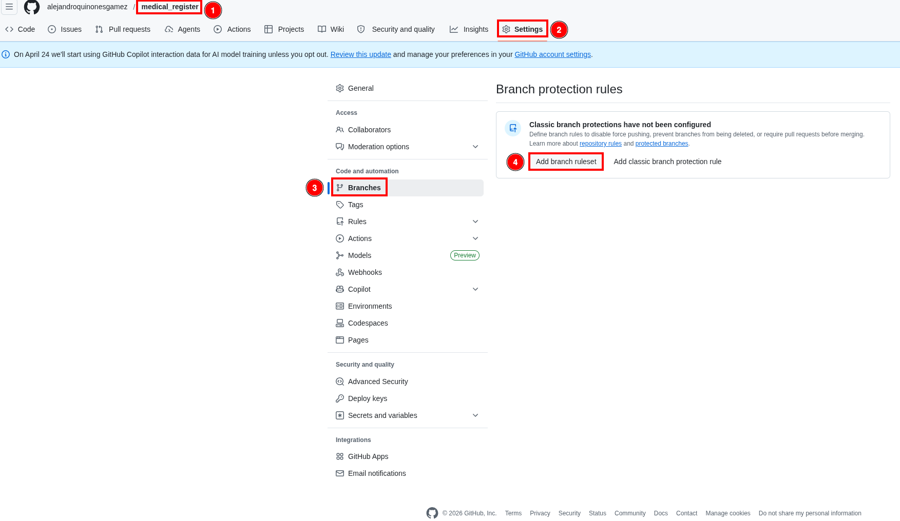
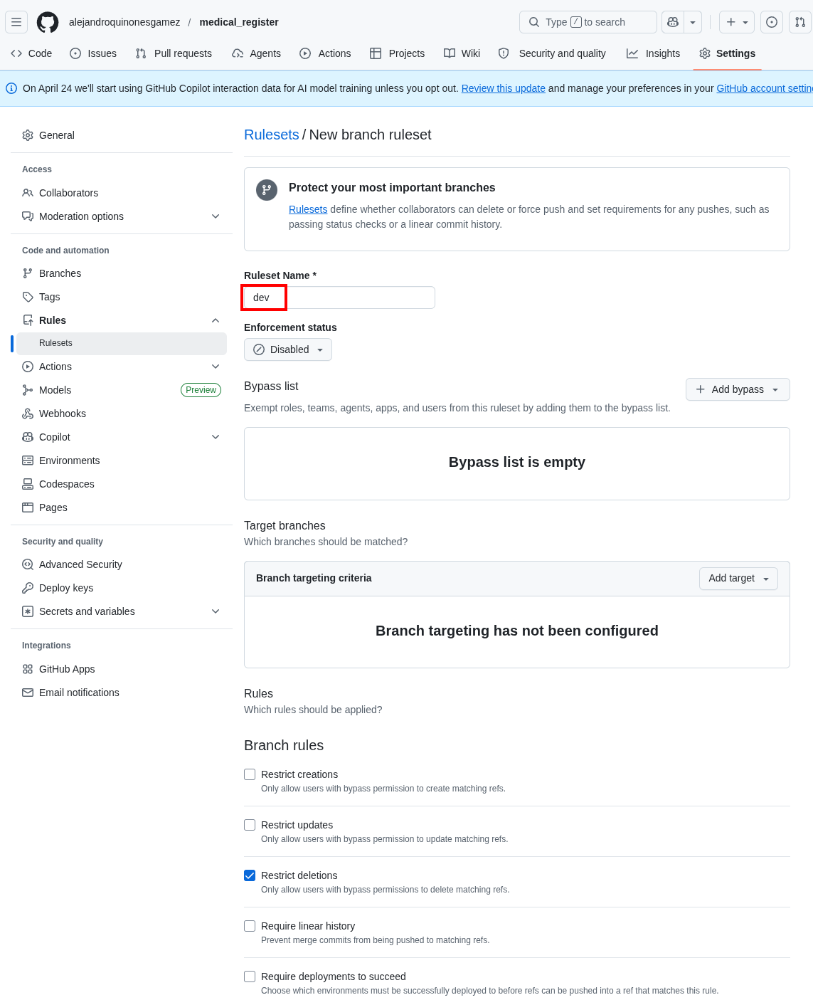
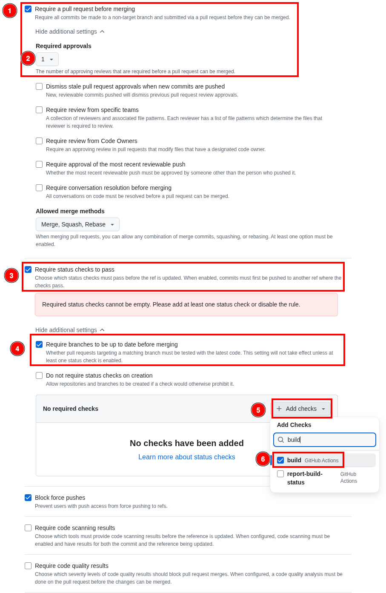
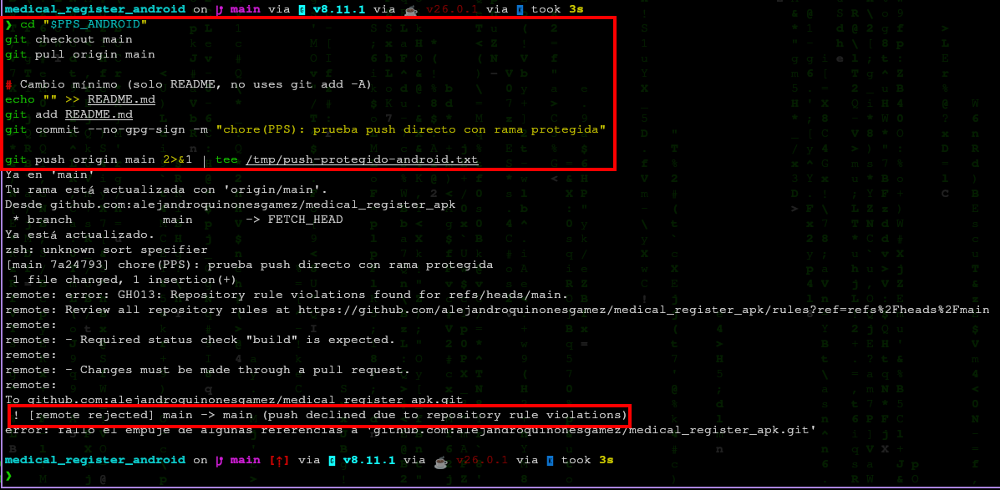
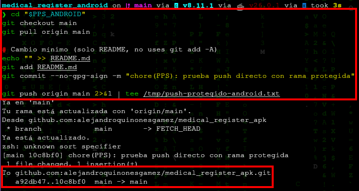
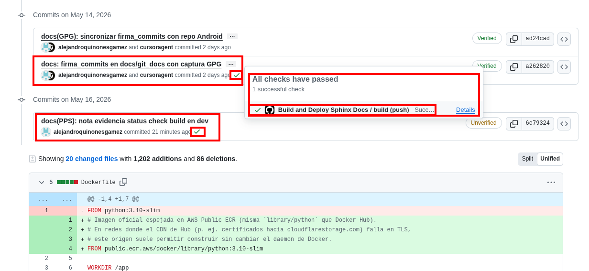

Protección de ramas (Branch protection rules)¶
Autores: Alejandro Quiñones Gámez & Adrián Bertos Gómez
Asignatura: PPS — Puesta a Producción Segura
Curso: Curso de Especialización en Ciberseguridad en Tecnologías de la Información
Centro: IES Zaidín-Vergeles
Enunciado: docs/git_docs/PPS_git/proteccion-ramas.html (Fernando Raya, 2026-04-20)
Nota (evidencia): en
medical_register, la ramadevexige el status checkbuild(workflow Build and Deploy Sphinx Docs) antes de fusionar.
Repositorios de este trabajo¶
Proyecto |
Repositorio GitHub |
Remoto |
Rama habitual |
|---|---|---|---|
Cliente Android |
|
|
|
Backend |
|
|
Las reglas de protección se configuran en GitHub, en el repositorio remoto que corresponda (medical_register_apk y/o medical_register). El ejemplo de push directo bloqueado (§3.3) debe usar la rama que hayáis protegido (main en Android, dev o main en el backend).
# Ejemplo: push directo a main en el cliente Android (debe fallar si main está protegida)
cd medical_register_apk # raíz del clone
git push origin main
1. Introducción¶
Las reglas de protección de ramas en GitHub (o equivalentes en GitLab: Protected branches) imponen restricciones sobre ramas críticas (main, master, release/*, etc.). El enunciado pide activar revisiones obligatorias y comprobaciones de estado (status checks) en la rama principal, y documentar el comportamiento sin necesidad de capturar datos sensibles del repositorio.
Documentación oficial:
2. Características (resumen del enunciado)¶
Característica |
Efecto |
|---|---|
Evitar modificaciones directas |
Impide |
Revisiones obligatorias |
Exige uno o más aprobaciones de revisores antes de fusionar (code review). |
Status checks |
Exige que jobs de CI (tests, Gitleaks, build de docs, etc.) finalicen en éxito antes de habilitar el merge. |
3. Actividad: configuración recomendada en GitHub¶
Ruta típica en el repositorio:
Settings → Branches → Branch protection rules → Add rule (o Add branch protection rule).
3.1. Ámbito de la regla¶
Branch name pattern: la rama que uséis como principal en ese remoto. En
medical_register_apksuele sermain; enmedical_register(backend) el trabajo cotidiano suele estar endev(ajusta el patrón adevsi protegéis esa rama en lugar demain).
3.2. Opciones mínimas alineadas con el enunciado¶
Require a pull request before merging
Activar Require approvals (al menos 1 en equipos pequeños; más en producción).
Opcional: Dismiss stale pull request approvals when new commits are pushed.
Require status checks to pass before merging
Activar Require branches to be up to date before merging (recomendado).
En el buscador de checks, seleccionar los jobs que ya existan en el repo, por ejemplo los definidos en
.github/workflows/coverage.ymlybuild-docs.yml(los nombres exactos aparecen en la pestaña Actions tras una ejecución).
Do not allow bypassing the above settings
Desactivar bypass para administradores si la política del curso lo exige (así la regla aplica a todos).
Opciones adicionales habituales en PPS:
Require conversation resolution before merging (cerrar todos los hilos de comentario).
Require linear history (evita merge commits si se prefiere rebase/squash).
Lock branch solo en situaciones excepcionales (congelación de release).
En medical_register (backend) se configuró la regla sobre la rama dev: PR obligatorio, aprobaciones y status check build (Build and Deploy Sphinx Docs):



3.3. Cómo documentar el funcionamiento¶
Intento de push directo (debe fallar). Sustituye rama y repositorio según el caso (
mainen Android,deven el backend si es la rama protegida):cd medical_register_apk # raíz del clone del cliente Android git checkout main git pull origin main echo "# test" >> README.md git commit -am "chore: demo proteccion rama" git push origin main
Resultado esperado:
remote: error: GH006: Protected branch update failed...o mensaje equivalente de GitHub indicando que la rama está protegida.En
medical_register_apk(ramamainprotegida):
Si en algún momento el push directo a
mainfue aceptado (antes de activar la regla o con bypass), puede quedarpush-aceptado-android.pngcomo contraste; la evidencia principal es el rechazo con la regla activa.
Flujo correcto: crear rama, abrir PR hacia la rama protegida, esperar checks verdes y aprobación, fusionar desde la UI (o con merge queue si aplica).
Pull Request hacia
deven el backend: el jobbuildaparece en verde en Checks:
No se incluyen capturas dedicadas de PR bloqueado / listo para merge: la evidencia del enunciado queda cubierta con la regla en
dev(§3.2), el checkbuilden PR y el push directo bloqueado en Android.
4. Relación con otros ejercicios PPS¶
Gitleaks / Semgrep: si sus workflows publican checks con nombre estable, pueden formar parte de los status checks obligatorios.
GitHub Secret scanning / Push protection: son políticas a nivel de código y seguridad, no sustituyen la revisión humana ni los tests.
Autores: Alejandro Quiñones Gámez & Adrián Bertos Gómez
Asignatura: PPS — Puesta a Producción Segura
Curso: Curso de Especialización en Ciberseguridad en Tecnologías de la Información
Centro: IES Zaidín-Vergeles